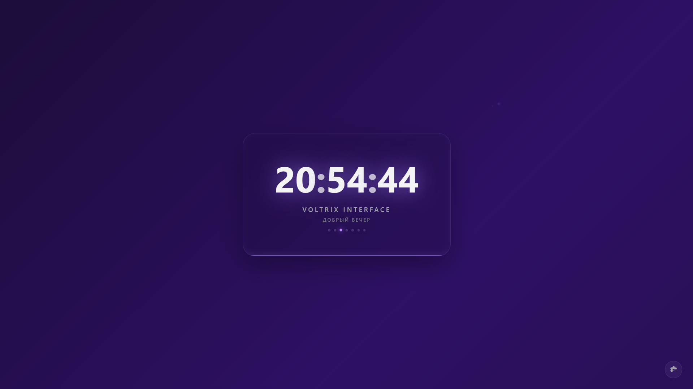

Стильный и технологичный стартовый экран, заменяющий скучную стандартную страницу. Премиальный минимализм, интерактивные неоновые темы и ничего лишнего.
Скачать Voltrix .CRXVoltrix.crx на компьютер.chrome://extensions/
Это расширение создано исключительно для компьютеров.
Откройте эту ссылку на вашем ПК или ноутбуке, чтобы скачать и установить кастомный стиль браузера!